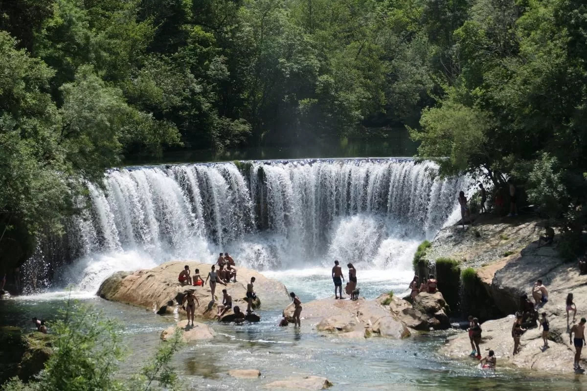
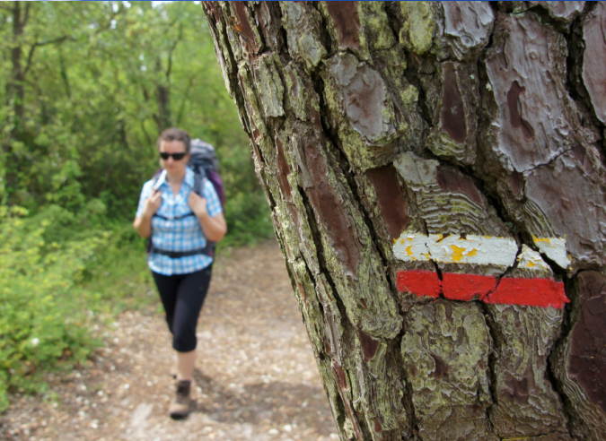
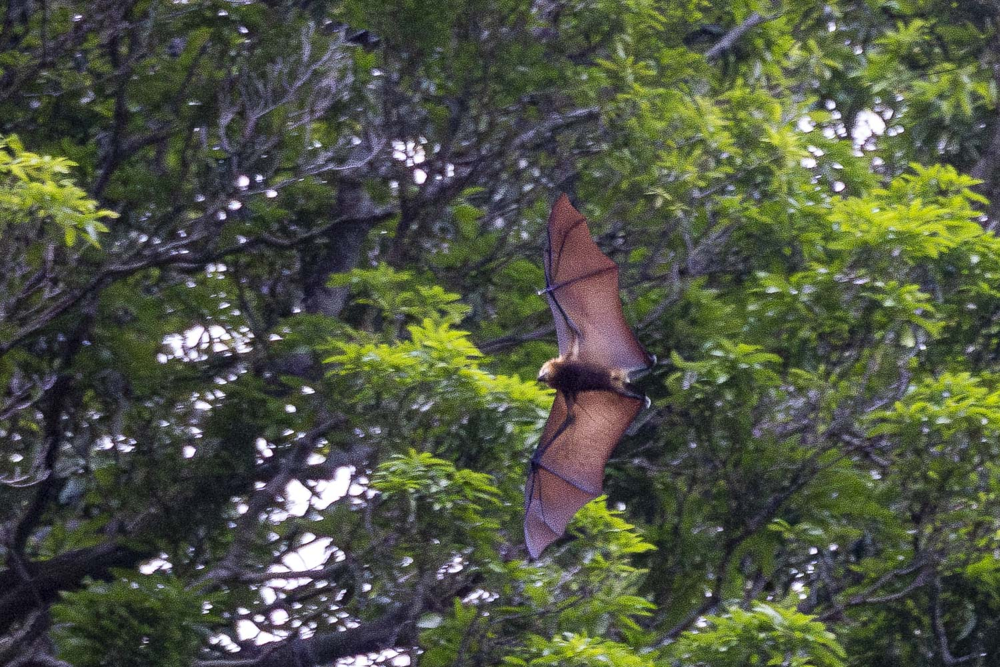
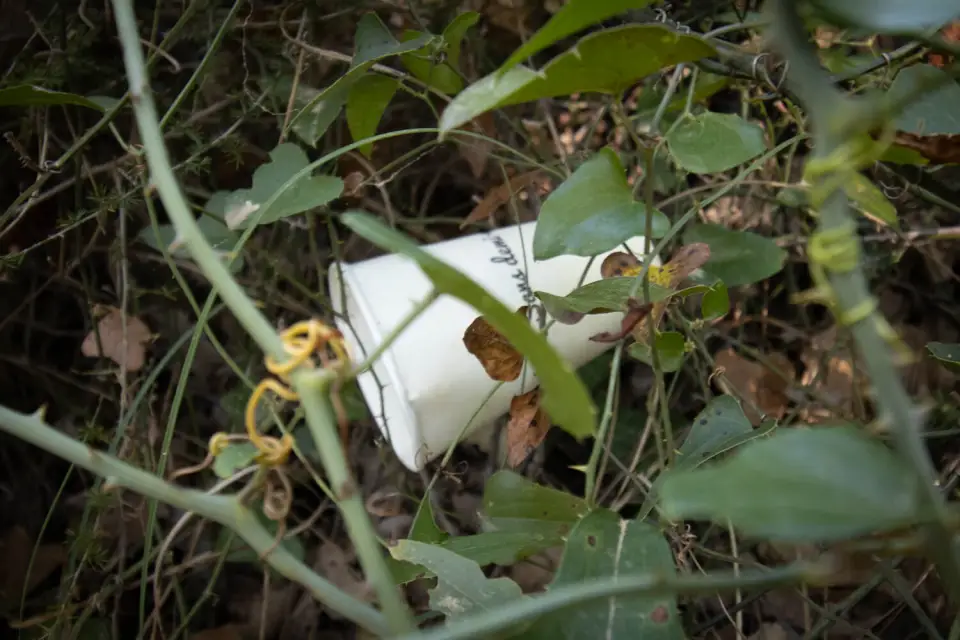

Chaussures fermées indispensables sur le sentier (terrain rocailleux, dénivelé 80 m). Pensez à emporter de l'eau en été : il n'y a aucun point de ravitaillement sur le parcours.

La baignade n'est pas autorisée dans le bassin (arrêté municipal) : les falaises de travertin sont instables et les courants imprévisibles. Les berges restent accessibles uniquement par les zones balisées.

Garder le sentier protège les formations de travertin : hors des chemins, elles mettent plusieurs décennies à se former et ne supportent pas le piétinement.

La gorge abrite des espèces protégées (chauves-souris, cincle plongeur, martin-pêcheur). Voix basse et déplacements calmes augmentent les chances d'observation.

Aucune poubelle sur le site. Bouteilles, emballages et déchets alimentaires repartent avec vous. L'ENS ne dispose pas de collecte sur le parcours.